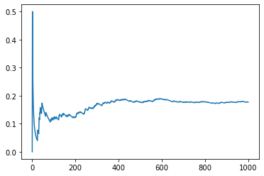

Tema 6: Numerisk integrasjon¶
Repetisjon (programmeringspuslespill):
Rektangelmetoden¶
n = 100000
def f(x):
return x**4
def f_analytisk(x):
return (1/5)*x**5
def rektangelmetoden_venstre(f, a, b, n):
A = 0
h = (b-a)/n
for i in range(n):
A = A + f(a+i*h)
return A*h
print(f'Numerisk verdi: {rektangelmetoden_venstre(f,0,2,n)}')
print(f'Analytisk verdi: {f_analytisk(2)-f_analytisk(0)}')
Numerisk verdi: 6.399840001066687
Analytisk verdi: 6.4
Bruk av biblioteker¶
from scipy import integrate
import numpy as np
x = np.linspace(0,2,n)
y = f(x)
trapes = integrate.trapz(y,x)
simpsons = integrate.simps(y,x)
print(trapes)
print(simpsons)
6.4000000010666875
6.400000000000016
Tilfeldige tall¶
import numpy as np
N = 1000000
seksere = 0
for i in range(N):
kast = np.random.randint(1,7)
if kast == 6:
seksere += 1
relfrek = seksere/N
print(relfrek)
print(1/6)
0.167036
0.16666666666666666
import matplotlib.pyplot as plt
N = 1000
antall_seksere = 0
relativ_frekvens = []
antall_kast = []
for i in range(1,N+1):
kast = np.random.randint(1,7)
if kast == 6:
antall_seksere += 1
relfrek = antall_seksere/i
relativ_frekvens.append(relfrek)
antall_kast.append(i)
plt.plot(antall_kast,relativ_frekvens)
plt.show()

Monte Carlo-integrasjon¶
# Vi skal finne pi
import numpy as np
N = 1000000
M = 0
for i in range(N):
x = np.random.uniform(-1,1)
y = np.random.uniform(-1,1)
if x**2 + y**2 <= 1:
M += 1
A = 4*M/N
print(A)
3.144164
def montecarlo(f,a,b,n):
h = (b-a)/n
x = np.random.uniform(a,b,n)
y = f(x)
fsum = np.sum(y)
integral = h*fsum
return integral
def f(x):
return x**4
def f_analytisk(x):
return (1/5)*x**5
print(f'Numerisk verdi: {montecarlo(f,0,2,1000)}')
print(f'Analytisk verdi: {f_analytisk(2)-f_analytisk(0)}')
Numerisk verdi: 6.658632580247065
Analytisk verdi: 6.4
Heistur, sesong 2¶
import numpy as np
data = np.loadtxt('Datafiler-innhold/heistur.csv',delimiter=',',skiprows=1)
tid = data[:,3]
v = data[:,4]
integral = 0
for i in range(len(v)-2):
bredde = tid[i+1] - tid[i]
dy = abs(v[i+1])
integral += dy*bredde
print(integral)
15.806602796813385
Numeriske biblioteker: Integrasjon¶
from scipy import integrate
def f(x):
return x**2 - 4
# Lager arrayer med verdier vi skal integrere
n = 1000
x = np.linspace(0,5,n)
y = f(x)
# Integrasjon
trapes = integrate.trapz(y,x) # Trenger arrayer
simpsons = integrate.simps(y,x) # Trenger arrayer
print("Trapesmetoden:",trapes)
print("Simpsons metode:",simpsons)
Numeriske biblioteker: Multippel integrasjon¶
\[\int_0^{\frac{\pi}{2}} \int_{-1}^1 x \sin(y) - ye^x dxdy\]
\[\int_0^3 \int_0^2 \int_0^1 xyz dxdydz\]
from scipy import integrate
import numpy as np
def f(y,x):
return x*np.sin(y) - y*np.exp(x)
def g(z, y, x):
return x*y*z
numerisk_dobbel = integrate.dblquad(f, -1, 1, 0, np.pi/2)
numerisk_trippel = integrate.tplquad(g, 0, 1, 0, 2, 0, 3)
analytisk_dobbel = np.pi**2/8 * (1/np.exp(1)-np.exp(1))
analytisk_trippel = 9/2
print(f'Numerisk verdi av dobbeltintegralet: {numerisk_dobbel[0]}')
print(f'Analytisk verdi av dobbeltintegralet: {analytisk_dobbel}')
print(f'Numerisk verdi av trippelintegralet: {numerisk_trippel[0]}')
print(f'Analytisk verdi av trippelintegralet: {analytisk_trippel}')
Numerisk verdi av dobbeltintegralet: -2.899692718238082
Analytisk verdi av dobbeltintegralet: -2.8996927182380823
Numerisk verdi av trippelintegralet: 4.5
Analytisk verdi av trippelintegralet: 4.5